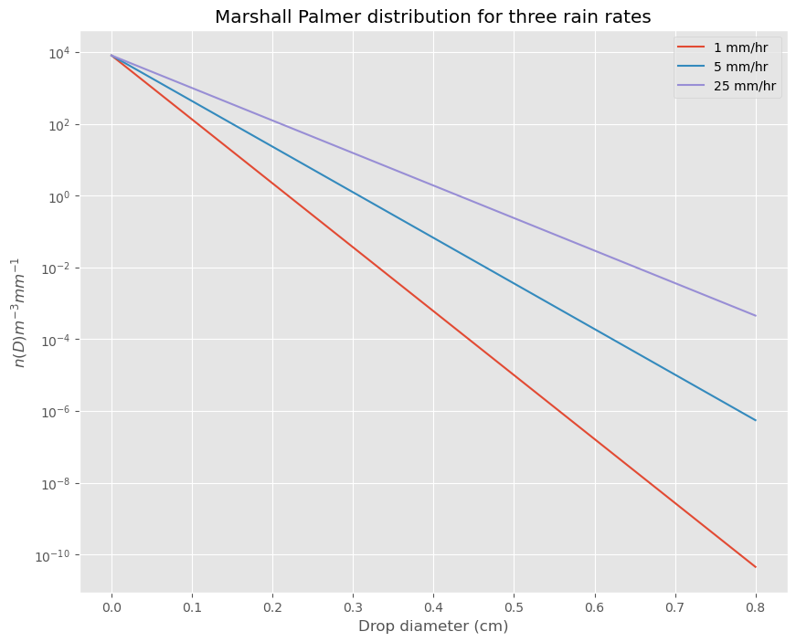
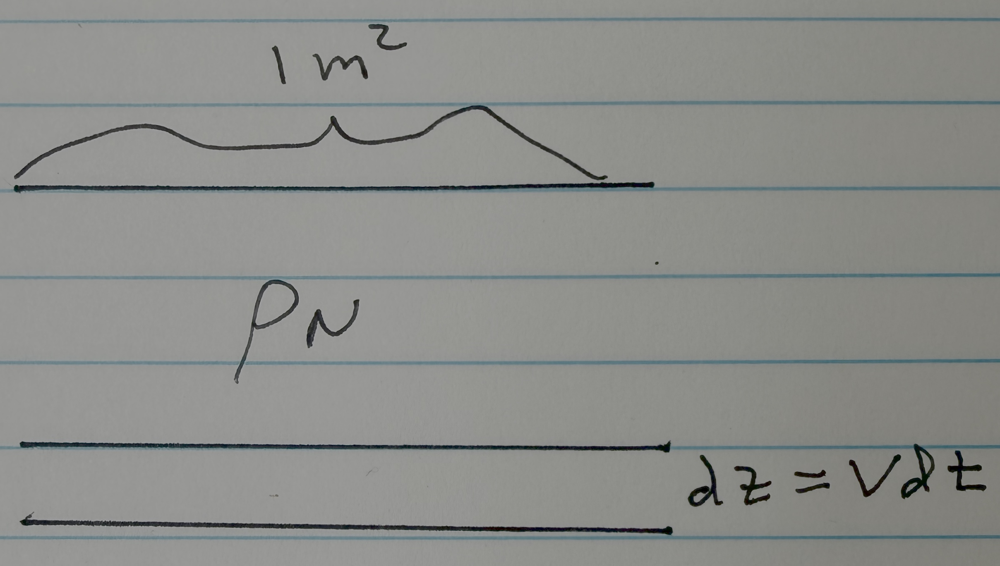
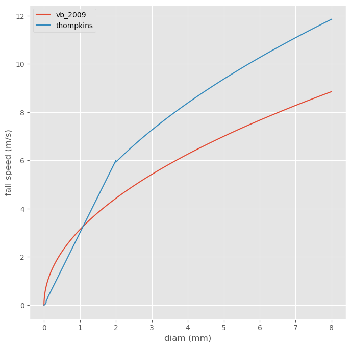

Worksheet 12 answer: Marshall-Palmer Distribution#
Download link: worksheet12_marshall_palmer_sol.ipynb
Code and questions about the Marshall-Palmer distribution#
See Thompkins p. 81 and Wallace and Hobbs page 232
import numpy as np
from matplotlib import pyplot as plt
plt.style.use('ggplot')
def marshallpalmer(R):
"""
marshall palmer size distribution
given rainrate R in mm/hr, return
n(D), the number concentration of drops with
diameter D using Thompkins 4.32
Parameters
----------
R: float
rainrate (mm/hr)
Returns
-------
d: vector (float)
drop diameters (cm)
n: vector (float)
the number distribution n(d) #m^{-3} mm^{-1}
"""
D=np.arange(0,8,0.001)
Dmm=D
Dcm=D*0.1
N0=0.08*1.e6*1.e-1 #m**{-3} mm^{-1}
theLambda=41*R**(-0.21)
n=N0*np.exp(-theLambda*Dcm)
return Dcm,n
curve_dict={}
Rvals = [1,5,25]
for R in Rvals:
diam,ndist = marshallpalmer(R)
curve_dict[R] = ndist
fig, ax = plt.subplots(1,1,figsize=(10,8))
for R in Rvals:
ax.semilogy(diam,curve_dict[R],label='{} mm/hr'.format(R))
ax.set_xlabel('Drop diameter (cm)')
ax.set_ylabel('$n(D) m^{-3} mm^{-1}$')
ax.set_title('Marshall Palmer distribution for three rain rates')
out=ax.legend(loc='best')

Question 1: Mean diameter#
Confirm that the mean diameter of the Marshall Palmer distribution is \(1/\Lambda\)
Answer 1: calculus#
Given a probability density \(p(x)\) the definition of the mean is just the weighted average (“first moment”) of the distribution:
So for the Marshall Palmer distribution that becomes:
The denominator is easy:
For the numerator, the secret is the first line in this list of integrals:
In our case \(c = -\Lambda\) and \(x=D\) so:
Answer 2: Python#
R = 15 #mm/hr
theLambda=41*R**(-0.21)
print(f'mean diameter = {1./theLambda:6.3g} cm')
diam,ndist = marshallpalmer(R) #cm, m^{-3} mm^{-1}
binwidth = np.diff(diam)[0]*10 #bin width in mm
#
# the python version of equation 2
#
approx_diam = np.sum(diam*ndist*binwidth)/np.sum(ndist*binwidth)
print(f'approx diameter = {approx_diam:6.3g} cm')
mean diameter = 0.0431 cm
approx diameter = 0.043 cm
Question 2 Answer: Rain rate (part of assignment 9)#
Calculate the precipitation flux (mm/hr) by integrating the total volumen in the Marshall Palmer size distribution and with the fall speed of Villermaux and Bossa (vb_2009): \(V = - \sqrt{\rho_l/\rho_{air} * g *D}\) where D is the drop diameter and \(\rho_l,\rho_{air}\) are the liquid and air densities. Show that you get about R=15 mm/hour back from this calculation if you use the \(\Lambda\) that’s appropriate for R=15 mm/hour
Calculate the rainrate R given \(n(D)dD\) and the fallspeed#
Recall this figure from Day 25:
{kind=link}

Fig. 4 Flux through a box in time dt#
You should convince yourself that if the droplets are falling at speed V and the droplet liquid water density is \(\rho_N\) (\(kg/m^3\)) then in time \(dt\) you will measure falling mass \(dM\) that sweeps out a volume of \(1\ m^2\) \(\times\ dz\) = \(1\ m^2\) \(\times\ V dt\). This means that the mass flux \(F = dM/dt\ (kg\,s^{-1})\) is given by:
Size distributed drops#
If the drops have a size distribution of \(n(D)\), defined as the number of drops/volume with diameters between \(D \rightarrow D+dD\), then we’ll need to integrate (16) over all drop diameters to get the total flux. Using equation (10) from the size distribution notes and switching from radius \(r\) to diameter \(D\) with \(\rho_l\) as the density of liquid water:
Below we code (17) for two different versions of \(V(D)\): the one given by Thompkins p. 77 and the the fall speed from the Day 24 droplet fragementation paper by Villermaux and Bossa, 2009
from a405.thermo.constants import constants as c
#
# air density
#
rho = 1 #kg/m^3
def find_vb2009(diams):
"""
Villermaux and Bossa, 2009 fallspeed
diams: vector of floats
drop diamter (meters)
Returns
-------
V: vector of floats
fall speed (m/s)
"""
V = np.sqrt(c.rhol/rho*c.g0*diam) #m/s Villermaux and Bossa, 2009
return V
Thompkins p. 77 table for \(V_t\)#
The Thompkins table lists three different drag regimes:
\(r<30 \mu \mathrm{~m}\) : Drag \(\propto V r\) giving \(V_t=X_1 r^2\) where \(X_1 \sim 1.2 \times 10^8 \mathrm{~s}^{-1} \mathrm{~m}^{-1}\).
\(30<r<1000 \mu \mathrm{~m}\) : Drag \(\propto V r^2\) giving \(V_t=X_2 r\) where \(X_2 \sim 8 \times 10^3 \mathrm{~s}^{-1}\).
\(r>1000 \mu \mathrm{~m}\) : Drag \(\propto V^2 r^2\) giving \(V_t=X_3 \sqrt{r}\) where \(X_3 \sim 250 \mathrm{~s}^{-1} \mathrm{~m}^{0.5}\).
def find_thompkins(diams):
"""
Thompkins p. 77 table
Parameters
----------
diams: vector of floats
drop diamter (meters)
Returns
-------
vel_vec: vector of floats
fall speed (m/s)
"""
diams = np.atleast_1d(diams)
rvals = diams/2.
#diam in meters, thompkins p. 77
vel_list=[]
#
# thompkins defines 3 different fallspeeds in
# different size ranges
#
edges = np.array([0,30,1000,8000])*1.e-6 #meters
bins = np.searchsorted(edges,rvals)
for r, bin in zip(rvals,bins):
if bin == 1:
vel = 1.2e8*r**2.
elif bin == 2:
vel = 6.e3*r #Thompkins says 8000?
elif bin == 3:
vel = 250*0.75*np.sqrt(r) #0.75 fudge factor to get curve match
else:
if r==0:
vel=0.
else:
raise ValueError('droplet size out of bounds')
vel_list.append(vel)
return np.array(vel_list)
add both functions to a dictionary#
Vdict=dict(vb_2009=find_vb2009,thompkins=find_thompkins)
R=15 #mm/hr True rainrate for Marshall Palmer
diam_cm,ndist = marshallpalmer(R)
diam = diam_cm*1.e-2 #cm to meters
fig,ax = plt.subplots(1,1,figsize=(8,8))
for name,Vfunc in Vdict.items():
ax.plot(diam*1.e3,Vfunc(diam),label=name)
ax.legend(loc='best')
out=ax.set(xlabel='diam (mm)',ylabel='fall speed (m/s)')

Compare the rain rates with R=15 mm/hr#
#find the rain rate for a dropsize distribution
#specified by a marshall-palmer distribution of 15 mm/hour
import numpy as np
for name,Vfunc in Vdict.items():
V = Vfunc(diam)
binwidth = np.diff(diam)[0]*1.e3 #mm
R=np.sum(ndist*np.pi*(diam**3)/6*V*binwidth) #flux in m/s
R=R*c.rhol*3600. #convert mm/hour
print(f'\n{name} with MP rainrate R=15 mm/hour integration gives {R:8.2f} mm/hour\n')
vb_2009 with MP rainrate R=15 mm/hour integration gives 12.40 mm/hour
thompkins with MP rainrate R=15 mm/hour integration gives 14.80 mm/hour